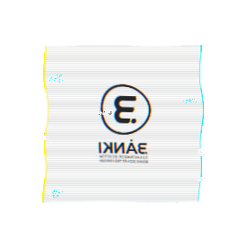

K. Z. PORTFOLIO
×
Figyelem!
Ezen weblap egyes képein felhasznált dátumok, helyszínnevek, nevek stb. fiktív elnevezések!
Mindennemű egyezésük a valósággal csupán a véletlen műve.
Szeretett iskolámról
A DUE Bánki Donát Technikum Fejér vármegyében található a gyönyörűszép Dunaújváros ölelésében. A vármegye legelitebb intézménye ahol a bentmaradásért is meg kell küzdeni. Tanáraink a legmagasabb fokú tudás tárával rendelkeznek és mindent megtesznek annak érdekében, hogy a diákok megértsék a tananyagot és elsajátítsák a megfelelő gyakorlati és elméleti tudást. Az első pár évben sokan kiesnek, és csak a legkíválóbb tanulók maradnak talpon akiknek késöbb be kell bizonyítaniuk rátermettségüket. Megtiszteltetés, hogy e intézményben végezhettem el a tanulmányaimat!
Szerény személyemről
Zoli vagyok, és mindig nyitott vagyok új kihívásokra. Szenvedélyem a tanulás, a fejlődés, valamint a kreativitás minden formája. Hiszek abban, hogy minden helyzetben megtalálható a lehetőség, és mindent megteszek a céljaim elérése érdekében. A csapatmunkát és az együttműködést fontosnak tartom, mivel úgy érzem, hogy közösen érhetjük el a legjobb eredményeket. Mindig új ötletekkel és friss szemlélettel közelítek a feladatokhoz.
